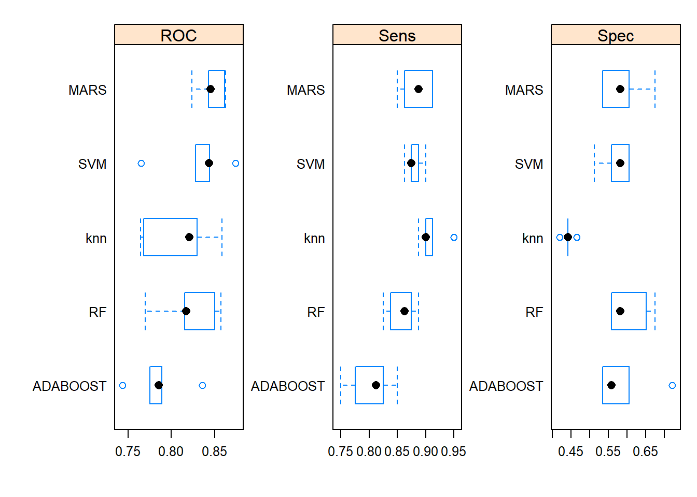
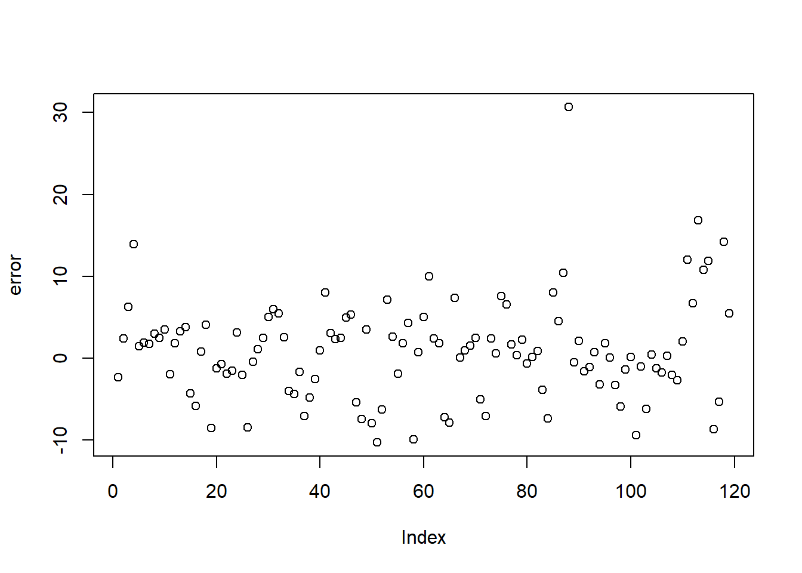

3 Deep learning
3.1 Deep neural network
3.1.1 Load data
# load the Pima Indians dataset from the mlbench dataset
library(mlbench)
data(PimaIndiansDiabetes)
# rename dataset to have shorter name because lazy
diabetes <- PimaIndiansDiabetes
data.set <- diabetes
# datatable(data.set[sample(nrow(data.set),
# replace = FALSE,
# size = 0.005 * nrow(data.set)), ])summary(data.set)## pregnant glucose pressure triceps
## Min. : 0.000 Min. : 0.0 Min. : 0.00 Min. : 0.00
## 1st Qu.: 1.000 1st Qu.: 99.0 1st Qu.: 62.00 1st Qu.: 0.00
## Median : 3.000 Median :117.0 Median : 72.00 Median :23.00
## Mean : 3.845 Mean :120.9 Mean : 69.11 Mean :20.54
## 3rd Qu.: 6.000 3rd Qu.:140.2 3rd Qu.: 80.00 3rd Qu.:32.00
## Max. :17.000 Max. :199.0 Max. :122.00 Max. :99.00
## insulin mass pedigree age diabetes
## Min. : 0.0 Min. : 0.00 Min. :0.0780 Min. :21.00 neg:500
## 1st Qu.: 0.0 1st Qu.:27.30 1st Qu.:0.2437 1st Qu.:24.00 pos:268
## Median : 30.5 Median :32.00 Median :0.3725 Median :29.00
## Mean : 79.8 Mean :31.99 Mean :0.4719 Mean :33.24
## 3rd Qu.:127.2 3rd Qu.:36.60 3rd Qu.:0.6262 3rd Qu.:41.00
## Max. :846.0 Max. :67.10 Max. :2.4200 Max. :81.003.1.2 Process data and variable
data.set$diabetes <- as.numeric(data.set$diabetes)
data.set$diabetes=data.set$diabetes-1
head(data.set$diabetes)## [1] 1 0 1 0 1 0head(data.set)## pregnant glucose pressure triceps insulin mass pedigree age diabetes
## 1 6 148 72 35 0 33.6 0.627 50 1
## 2 1 85 66 29 0 26.6 0.351 31 0
## 3 8 183 64 0 0 23.3 0.672 32 1
## 4 1 89 66 23 94 28.1 0.167 21 0
## 5 0 137 40 35 168 43.1 2.288 33 1
## 6 5 116 74 0 0 25.6 0.201 30 0str(data.set)## 'data.frame': 768 obs. of 9 variables:
## $ pregnant: num 6 1 8 1 0 5 3 10 2 8 ...
## $ glucose : num 148 85 183 89 137 116 78 115 197 125 ...
## $ pressure: num 72 66 64 66 40 74 50 0 70 96 ...
## $ triceps : num 35 29 0 23 35 0 32 0 45 0 ...
## $ insulin : num 0 0 0 94 168 0 88 0 543 0 ...
## $ mass : num 33.6 26.6 23.3 28.1 43.1 25.6 31 35.3 30.5 0 ...
## $ pedigree: num 0.627 0.351 0.672 0.167 2.288 ...
## $ age : num 50 31 32 21 33 30 26 29 53 54 ...
## $ diabetes: num 1 0 1 0 1 0 1 0 1 1 ...- transform dataframe into matrix
# Cast dataframe as a matrix
data.set <- as.matrix(data.set)
# Remove column names
dimnames(data.set) = NULLhead(data.set)## [,1] [,2] [,3] [,4] [,5] [,6] [,7] [,8] [,9]
## [1,] 6 148 72 35 0 33.6 0.627 50 1
## [2,] 1 85 66 29 0 26.6 0.351 31 0
## [3,] 8 183 64 0 0 23.3 0.672 32 1
## [4,] 1 89 66 23 94 28.1 0.167 21 0
## [5,] 0 137 40 35 168 43.1 2.288 33 1
## [6,] 5 116 74 0 0 25.6 0.201 30 03.1.3 Split data into training and test datasets
- including
xtrain ytrian xtest ytest
# Split for train and test data
set.seed(100)
indx <- sample(2,
nrow(data.set),
replace = TRUE,
prob = c(0.8, 0.2)) # Makes index with values 1 and 2# Select only the feature variables
# Take rows with index = 1
x_train <- data.set[indx == 1, 1:8]
x_test <- data.set[indx == 2, 1:8]# Feature Scaling
x_train <- scale(x_train )
x_test <- scale(x_test )y_test_actual <- data.set[indx == 2, 9]- transform target as on-hot-coding format
# Using similar indices to correspond to the training and test set
y_train <- to_categorical(data.set[indx == 1, 9])## Loaded Tensorflow version 2.8.0y_test <- to_categorical(data.set[indx == 2, 9])
head(y_train)## [,1] [,2]
## [1,] 0 1
## [2,] 1 0
## [3,] 0 1
## [4,] 1 0
## [5,] 0 1
## [6,] 1 0head(data.set[indx == 1, 9],20)## [1] 1 0 1 0 1 0 0 1 1 0 0 1 1 1 1 1 0 1 0 0- dimension of four splitting data sets
dim(x_train)## [1] 609 8dim(y_train)## [1] 609 2dim(x_test)## [1] 159 8dim(y_test)## [1] 159 23.1.4 Creating neural network model
3.1.4.1 construction of model
- the output layer contains 3 levels
# Creating the model
model <- keras_model_sequential()
model %>%
layer_dense(name = "DeepLayer1",
units = 10,
activation = "relu",
input_shape = c(8)) %>%
# input 4 features
layer_dense(name = "DeepLayer2",
units = 10,
activation = "relu") %>%
layer_dense(name = "OutputLayer",
units = 2,
activation = "softmax")
# output 4 categories using one-hot-coding
summary(model)## Model: "sequential"
## ________________________________________________________________________________
## Layer (type) Output Shape Param #
## ================================================================================
## DeepLayer1 (Dense) (None, 10) 90
## DeepLayer2 (Dense) (None, 10) 110
## OutputLayer (Dense) (None, 2) 22
## ================================================================================
## Total params: 222
## Trainable params: 222
## Non-trainable params: 0
## ________________________________________________________________________________3.1.5 Evaluation
3.1.5.1 Output loss and accuracy
using xtest and ytest data sets to evaluate the built model directly
model %>%
evaluate(x_test,
y_test)## loss accuracy
## 0.4379829 0.77358493.1.5.2 Output the predicted classes and confusion matrix
pred <- model %>%
predict(x_test) %>% k_argmax() %>% k_get_value()
head(pred)## [1] 0 1 0 1 0 0table(Predicted = pred,
Actual = y_test_actual)## Actual
## Predicted 0 1
## 0 89 21
## 1 15 343.1.5.3 Output the predicted values
prob <- model %>%
predict(x_test) %>% k_get_value()
head(prob)## [,1] [,2]
## [1,] 0.9596954 0.04030464
## [2,] 0.2162319 0.78376818
## [3,] 0.9709222 0.02907776
## [4,] 0.3163007 0.68369931
## [5,] 0.9584795 0.04152051
## [6,] 0.8011104 0.198889543.1.5.4 Comparison between prob, pred, and ytest
comparison <- cbind(prob ,
pred ,
y_test_actual )
head(comparison)## pred y_test_actual
## [1,] 0.9596954 0.04030464 0 1
## [2,] 0.2162319 0.78376818 1 1
## [3,] 0.9709222 0.02907776 0 0
## [4,] 0.3163007 0.68369931 1 1
## [5,] 0.9584795 0.04152051 0 0
## [6,] 0.8011104 0.19888954 0 03.2 Deep neural networks for regression
3.2.1 Loading packages and data sets
library(readr)
library(keras)
library(plotly)data("Boston", package = "MASS")
data.set <- Bostondim(data.set)## [1] 506 143.2.2 Convert dataframe to matrix without dimnames
library(DT)
# Cast dataframe as a matrix
data.set <- as.matrix(data.set)
# Remove column names
dimnames(data.set) = NULL
head(data.set)## [,1] [,2] [,3] [,4] [,5] [,6] [,7] [,8] [,9] [,10] [,11] [,12]
## [1,] 0.00632 18 2.31 0 0.538 6.575 65.2 4.0900 1 296 15.3 396.90
## [2,] 0.02731 0 7.07 0 0.469 6.421 78.9 4.9671 2 242 17.8 396.90
## [3,] 0.02729 0 7.07 0 0.469 7.185 61.1 4.9671 2 242 17.8 392.83
## [4,] 0.03237 0 2.18 0 0.458 6.998 45.8 6.0622 3 222 18.7 394.63
## [5,] 0.06905 0 2.18 0 0.458 7.147 54.2 6.0622 3 222 18.7 396.90
## [6,] 0.02985 0 2.18 0 0.458 6.430 58.7 6.0622 3 222 18.7 394.12
## [,13] [,14]
## [1,] 4.98 24.0
## [2,] 9.14 21.6
## [3,] 4.03 34.7
## [4,] 2.94 33.4
## [5,] 5.33 36.2
## [6,] 5.21 28.7summary(data.set[, 14])## Min. 1st Qu. Median Mean 3rd Qu. Max.
## 5.00 17.02 21.20 22.53 25.00 50.00 hist( data.set[, 14])
(#fig:target variable histogram)Fig 1 Histogram of the target variable
3.2.3 Spiting training and test data
# Split for train and test data
set.seed(123)
indx <- sample(2,
nrow(data.set),
replace = TRUE,
prob = c(0.75, 0.25)) # Makes index with values 1 and 2x_train <- data.set[indx == 1, 1:13]
x_test <- data.set[indx == 2, 1:13]
y_train <- data.set[indx == 1, 14]
y_test <- data.set[indx == 2, 14]3.2.5 Creating the model
model <- keras_model_sequential() %>%
layer_dense(units = 25,
activation = "relu",
input_shape = c(13)) %>%
layer_dropout(0.2) %>%
layer_dense(units = 25,
activation = "relu") %>%
layer_dropout(0.2) %>%
layer_dense(units = 25,
activation = "relu") %>%
layer_dropout(0.2) %>%
layer_dense(units = 1)model %>% summary()## Model: "sequential_1"
## ________________________________________________________________________________
## Layer (type) Output Shape Param #
## ================================================================================
## dense_3 (Dense) (None, 25) 350
## dropout_2 (Dropout) (None, 25) 0
## dense_2 (Dense) (None, 25) 650
## dropout_1 (Dropout) (None, 25) 0
## dense_1 (Dense) (None, 25) 650
## dropout (Dropout) (None, 25) 0
## dense (Dense) (None, 1) 26
## ================================================================================
## Total params: 1,676
## Trainable params: 1,676
## Non-trainable params: 0
## ________________________________________________________________________________model %>% get_config()## {'name': 'sequential_1', 'layers': [{'class_name': 'InputLayer', 'config': {'batch_input_shape': (None, 13), 'dtype': 'float32', 'sparse': False, 'ragged': False, 'name': 'dense_3_input'}}, {'class_name': 'Dense', 'config': {'name': 'dense_3', 'trainable': True, 'batch_input_shape': (None, 13), 'dtype': 'float32', 'units': 25, 'activation': 'relu', 'use_bias': True, 'kernel_initializer': {'class_name': 'GlorotUniform', 'config': {'seed': None}}, 'bias_initializer': {'class_name': 'Zeros', 'config': {}}, 'kernel_regularizer': None, 'bias_regularizer': None, 'activity_regularizer': None, 'kernel_constraint': None, 'bias_constraint': None}}, {'class_name': 'Dropout', 'config': {'name': 'dropout_2', 'trainable': True, 'dtype': 'float32', 'rate': 0.2, 'noise_shape': None, 'seed': None}}, {'class_name': 'Dense', 'config': {'name': 'dense_2', 'trainable': True, 'dtype': 'float32', 'units': 25, 'activation': 'relu', 'use_bias': True, 'kernel_initializer': {'class_name': 'GlorotUniform', 'config': {'seed': None}}, 'bias_initializer': {'class_name': 'Zeros', 'config': {}}, 'kernel_regularizer': None, 'bias_regularizer': None, 'activity_regularizer': None, 'kernel_constraint': None, 'bias_constraint': None}}, {'class_name': 'Dropout', 'config': {'name': 'dropout_1', 'trainable': True, 'dtype': 'float32', 'rate': 0.2, 'noise_shape': None, 'seed': None}}, {'class_name': 'Dense', 'config': {'name': 'dense_1', 'trainable': True, 'dtype': 'float32', 'units': 25, 'activation': 'relu', 'use_bias': True, 'kernel_initializer': {'class_name': 'GlorotUniform', 'config': {'seed': None}}, 'bias_initializer': {'class_name': 'Zeros', 'config': {}}, 'kernel_regularizer': None, 'bias_regularizer': None, 'activity_regularizer': None, 'kernel_constraint': None, 'bias_constraint': None}}, {'class_name': 'Dropout', 'config': {'name': 'dropout', 'trainable': True, 'dtype': 'float32', 'rate': 0.2, 'noise_shape': None, 'seed': None}}, {'class_name': 'Dense', 'config': {'name': 'dense', 'trainable': True, 'dtype': 'float32', 'units': 1, 'activation': 'linear', 'use_bias': True, 'kernel_initializer': {'class_name': 'GlorotUniform', 'config': {'seed': None}}, 'bias_initializer': {'class_name': 'Zeros', 'config': {}}, 'kernel_regularizer': None, 'bias_regularizer': None, 'activity_regularizer': None, 'kernel_constraint': None, 'bias_constraint': None}}]}3.2.6 Compiling the model
model %>% compile(loss = "mse",
optimizer = optimizer_rmsprop(),
metrics = c("mean_absolute_error"))3.2.7 Fitting the model
history <- model %>%
fit(x_train,
y_train,
epoch = 100,
batch_size = 64,
validation_split = 0.1,
callbacks = c(callback_early_stopping(monitor = "val_mean_absolute_error",
patience = 5)),
verbose = 2)c(loss, mae) %<-% (model %>% evaluate(x_test, y_test, verbose = 0))
paste0("Mean absolute error on test set: ", sprintf("%.2f", mae))## [1] "Mean absolute error on test set: 3.36"3.2.8 Plot the training process
plot(history) ### Calculating the predicted values on test data
pred2 <- model %>%
predict(x_test) %>% k_get_value()
head(cbind(pred2,y_test))## y_test
## [1,] 28.48462 21.6
## [2,] 38.18776 33.4
## [3,] 37.51901 36.2
## [4,] 15.78256 27.1
## [5,] 16.22480 15.0
## [6,] 18.86668 19.9- calculating
mean absolute error and root mean square errorand ploting
error <- y_test-pred2
head(error)## [,1]
## [1,] -6.884621
## [2,] -4.787763
## [3,] -1.319012
## [4,] 11.317439
## [5,] -1.224796
## [6,] 1.033316rmse <- sqrt(mean(error)^2)
rmse## [1] 0.0849763plot(error)
3.3 Convolutional neural netwrok
3.3.2 Importing the data
mnist <- dataset_mnist()- mnist is list; it contains
trainx, trainy, testx, testy
class(mnist)## [1] "list"- the dim of “mnist\(train\)x” is 60000 28 28
# head(mnist)3.3.3 preparing the data
- randomly sampling 1000 cases for training and 100 for testing
set.seed(123)
index <- sample(nrow(mnist$train$x), 1000)
x_train <- mnist$train$x[index,,]
y_train <- (mnist$train$y[index])
index <- sample(nrow(mnist$test$x), 100)
x_test <- mnist$test$x[index,,]
y_test <- (mnist$test$y[index])- dim of four data sets
dim(x_train)## [1] 1000 28 28dim(y_train)## [1] 1000dim(x_test)## [1] 100 28 28dim(y_test)## [1] 1003.3.3.1 Generate tensors
- each image is 28*28 pixel size; pass these values to computer
img_rows <- 28
img_cols <- 28- using
array_reshape()function to transformlistdata into tensors
x_train <- array_reshape(x_train,
c(nrow(x_train),
img_rows,
img_cols, 1))
x_test <- array_reshape(x_test,
c(nrow(x_test),
img_rows,
img_cols, 1))
input_shape <- c(img_rows,
img_cols, 1)- this below is tensor data
dim(x_train)## [1] 1000 28 28 13.3.3.2 Normalization and one-hot-encoded (dummy)
- training (features) data is rescaled by dividing the maxmimum to be normalized
x_train <- x_train / 255
x_test <- x_test / 255- converse targets into one-hot-encoded (dummy) type using
to_categorical()function
num_classes = 10
y_train <- to_categorical(y_train, num_classes)
y_test <- to_categorical(y_test, num_classes)y_train[1,]## [1] 0 0 0 0 0 0 1 0 0 03.3.4 Creating the model
model <- keras_model_sequential() %>%
layer_conv_2d(filters = 32,
kernel_size = c(3,3),
activation = 'relu',
input_shape = input_shape) %>%
layer_conv_2d(filters = 64,
kernel_size = c(3,3),
activation = 'relu') %>%
layer_max_pooling_2d(pool_size = c(2, 2)) %>%
layer_dropout(rate = 0.25) %>%
layer_flatten() %>%
layer_dense(units = 128,
activation = 'relu') %>%
layer_dropout(rate = 0.5) %>%
layer_dense(units = num_classes,
activation = 'softmax')- summary of model
model %>% summary()## Model: "sequential_2"
## ________________________________________________________________________________
## Layer (type) Output Shape Param #
## ================================================================================
## conv2d_1 (Conv2D) (None, 26, 26, 32) 320
## conv2d (Conv2D) (None, 24, 24, 64) 18496
## max_pooling2d (MaxPooling2D) (None, 12, 12, 64) 0
## dropout_4 (Dropout) (None, 12, 12, 64) 0
## flatten (Flatten) (None, 9216) 0
## dense_5 (Dense) (None, 128) 1179776
## dropout_3 (Dropout) (None, 128) 0
## dense_4 (Dense) (None, 10) 1290
## ================================================================================
## Total params: 1,199,882
## Trainable params: 1,199,882
## Non-trainable params: 0
## ________________________________________________________________________________